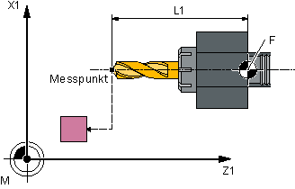
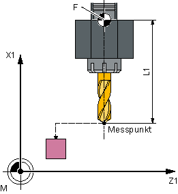

Der Werkzeugmesstaster wurde bei aktiven G18 kalibriert, wie für den Einsatz von Drehwerkzeugen üblich.
Werden auf Drehmaschinen Bohrer mit einer Längenkorrektur wie bei Fräsmaschinen eingesetzt (kanalspezifisches SD42950: $SC_TOOL_LENGTH_TYPE=0), so kann auch ein Bohrer in dieser Anwendung vermessen werden.
Die Länge L1 wird dabei stets in der 3. Achse (Werkzeugkorrekturachse) der aktuellen Ebene G17 bis G19 verrechnet. Damit ist auch die Stellung des Werkzeuges charakterisiert.
G17: L1 in Z-Achse (entspricht axiale Stellung)
G18: L1 in Y-Achse (keine Drehmaschinenanwendung)
G19: L1 in X-Achse (entspricht radiale Stellung)
Es wird die Länge L1 bestimmt, wenn folgende Bedingungen erfüllt sind:
Das aktive Werkzeug ist vom Typ 2xy (Bohrer)
Kanalspezifisches SD42950: $SC_TOOL_LENGTH_TYPE=0
G17 oder G19 aktiv ist und
|  Bohrerlänge L1 messen bei G17 |  Bohrerlänge L1 messen bei G19 |